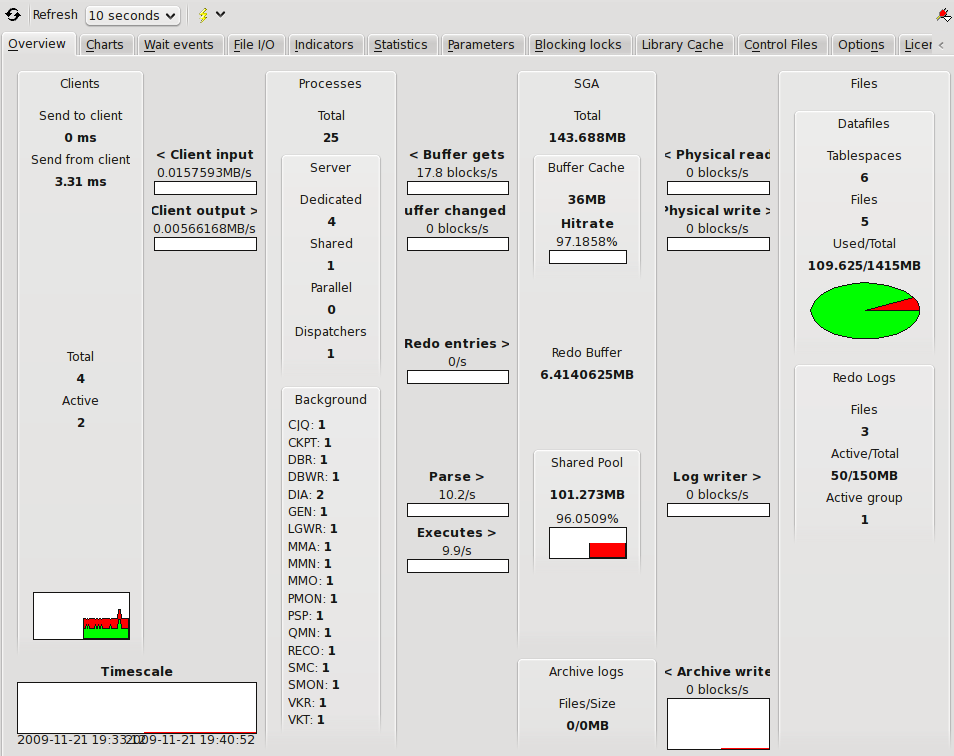
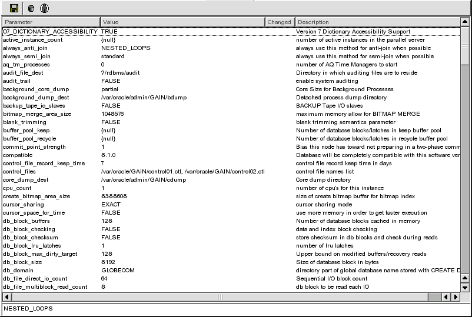

4.6 Server Tuning
This tool provides easy access to important server indicators as well as server statistics and an editor for database parameters.

The interface for this tool is very simple. First there is a toolbar with the following controlls.
- Refresh
- Refresh data from the database, will not read another value for charts.
- Refresh rate
- The interval between which to auto update data, observe that setting this too low could put a high load on a database server. This is also the sample interval for charts.
- Change connection
- Change the connection to monitor in the tuning tool.
There are several tabs in the window.
- Overview
- Displays an overview of dtabase statistics, shows the flow of data through the server in an intuitive way.
- Charts
- Charts containing important performance information from the database.
- Wait events
- Information and charts about wait events.
- File I/O
- Displays information about I/O separated by tablespace or datafile. You can select if you want to see average wait time, blocks for tablespace or datafile by using the combobox at the top of the charts.
- Indicators
- Important performance indicators.
- Statistics
- Raw statistic information from the server. The statistics is shown in two columns, the first one contain the actual value, the second show the change in the value since the last update.
- Parameters
- This tab displays the values of the parameters of the database. You can also use it to change the values by selecting a row and entering a new value at the bottom of the tab. After changes has been made you can apply or export these changes using the buttons in the toolbar at the top of the parameter editor.

- Display hidden parameters
- TODO
- Generate configuration file
- Generate a p-file with the current changes (And original changes as well) into a memo editor(see memoeditor).
- Apply changes to system
- Apply changes made to the system.
- Apply changes to session
- Apply changes to the current session. Will only apply changes to the main connection and not any child sessions TOra might open for instance when statements are executed in the worksheet.
- Drop changes
- Drop the changes currently made to the parameters and revert to the current session settings.
- Blocking locks
- TODO.
- Library cache
- TODO.
- Control files
- TODO.
- Options
- List the options available in the database server.
- Licenses
- Display license information to the current database.